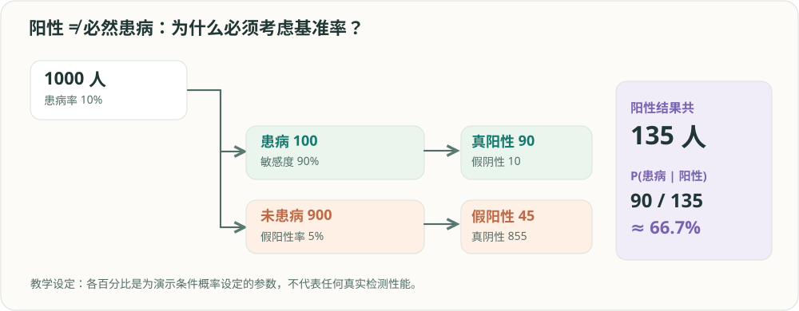
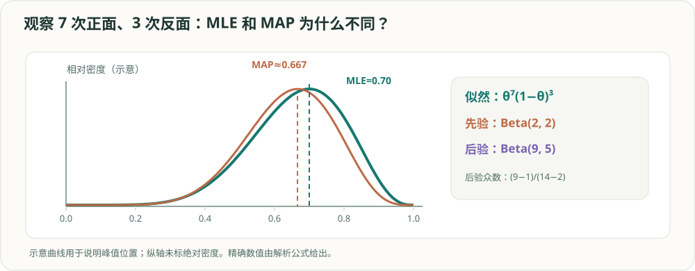

概率统计：如何用证据修正判断
从基准率陷阱、贝叶斯更新到似然与先验，建立能够解释不确定性、参数估计及推断边界的概率语言。
01 · 概率是条件化的判断
无条件概率 P(H) 描述在指定人群或随机过程中的事件比例；条件概率 P(H|E) 则要求“已经知道 E 出现”。一般 P(H|E) 与 P(E|H) 不相等。把这两项互换，是医学筛查、欺诈识别和罕见事件分类里常见的推理错误。
在模型里，概率分布描述随机变量可能取值及其相对权重。伯努利分布用于二值结果，二项分布用于独立同概率的重复二值试验计数。正态分布经常被用作某些误差的近似模型，但不能仅凭有均值和方差就断言观测服从正态。
02 · 一千人的贝叶斯计数
以完全虚构的教学场景为例：1000 人中 10% 患病，敏感度 90%，特异度 95%。患病者 100 人里真阳性 90；未患病者 900 人里假阳性 45。阳性总人数 135，阳性者中患病比例是 90/135≈66.7%，而非 90%。

若 H 和非 H 构成完备分组，分母 P(E)=P(E|H)P(H)+P(E|¬H)P(¬H)。本例是 0.9×0.1+0.05×0.9=0.135。改变人群基准率，后验也随之改变。
03 · 似然不是参数的概率
设每次抛硬币独立且正面概率不变，10 次中得到 7 次正面。固定观测后，将样本概率看作参数 θ 的函数，得到似然（省略与参数无关的组合项）L(θ)∝θ⁷(1−θ)³。令其最大的 MLE 是 7/10=0.7，并不表示“参数本身有 70% 的概率等于这个值”。
若用 Beta(2,2) 作为参数先验，结合独立伯努利观测得到后验 Beta(9,5)。后验众数即 MAP 为 (9−1)/(9+5−2)=2/3。样本量增大后，同一先验的相对影响通常减弱，但这不等于任何条件下都能忽略先验。

04 · 假设检验与区间估计的界限
假设检验先设定零假设，在它成立的前提下评价观测数据有多罕见。p 值不是零假设为真的概率，也不衡量实际效果大小。对上百个特征逐一尝试、只挑显著的若干个，会增加错误发现风险；要考虑多重检验或使用独立验证集。
频率学置信区间的“95%”是大量重复抽样时该程序的长期覆盖率，不能把已经计算出的固定区间直接解读成参数有 95% 概率落入其中。贝叶斯可信区间是给定模型、先验及数据的后验概率陈述，两者不应混淆。
05 · 把两个估计变成可执行断言
prevalence = 0.10
sensitivity, specificity = 0.90, 0.95
p_positive = sensitivity*prevalence + (1-specificity)*(1-prevalence)
posterior = sensitivity*prevalence / p_positive
assert abs(posterior - 2/3) < 1e-12
successes, failures = 7, 3
mle = successes/(successes+failures)
a, b = 2+successes, 2+failures
map_estimate = (a-1)/(a+b-2)
assert mle == 0.7
assert abs(map_estimate - 2/3) < 1e-12
print('P(H|+), MLE, MAP:', posterior, mle, map_estimate)该例仅使用 Python 标准库；Beta 分布众数公式要求两个后验形状参数都大于 1。在其他先验和边界情形下不能无条件套用。
06 · 哪些不确定性没有被公式消除
模型假设错误、标签污染、样本收集偏差或人群漂移，都会使根据公式计算的概率偏离实际。相关不等于因果；零相关不等于独立。可靠的概率输出还需要单独评估校准情况与适用群体。